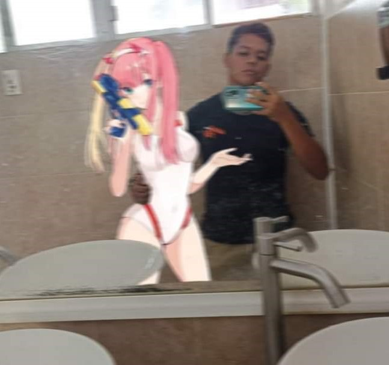

Anecdotario Jorge
Cómo Josué conoció a Jorge

Al chile ni me acuerdo de cómo lo conocí, al ser amigo de Azael naturalmente me acerqué a su grupo de amigos, de entre ellos estaba Jorge, así que lo más seguro fue que nos acercamos y nos conocimos por esa razón, luego supimos que jugábamos el mismo juego así que a veces jugábamos, luego entramos al área de cómputo y empezamos a convivir diariamente, lo cual hizo que nos acercáramos más naturalmente.
Cómo mejorar nuestra convivencia
Mi convivencia con Jorge es buena, nos llevamos bien y al vernos todos los días en la escuela nos permite platicar sin problema alguno, nos hacemos bromas y tiramos desmadre a Iridia, así que realmente nos llevamos bien, supongo que una forma de mejorar nuestra convivencia podría ser con este tipo de trabajos en equipo en los cuales hablamos más e interactuamos de forma constante.
Cómo Axel conoció a Jorge
Tenía una amiga llamada Estefanía la cual mi compañero Jorge gustaba de ella,
por ser amigovio de mi amiga era casi obvio que en algún momento iba a cono-
cerlo y por tanto platicar con él pero como todo en esta vida esta relación si es
que podemos llamarlo así... llegó a su fin pero como me cayó bien y es curiosito
ademas de que va en mi mismo salón pues terminé llevandome con él; FIN
Cómo podríamos mejorar la convivencia:
Ora, ya así estamos bien para qué mejorarla despues me va a querer besar.